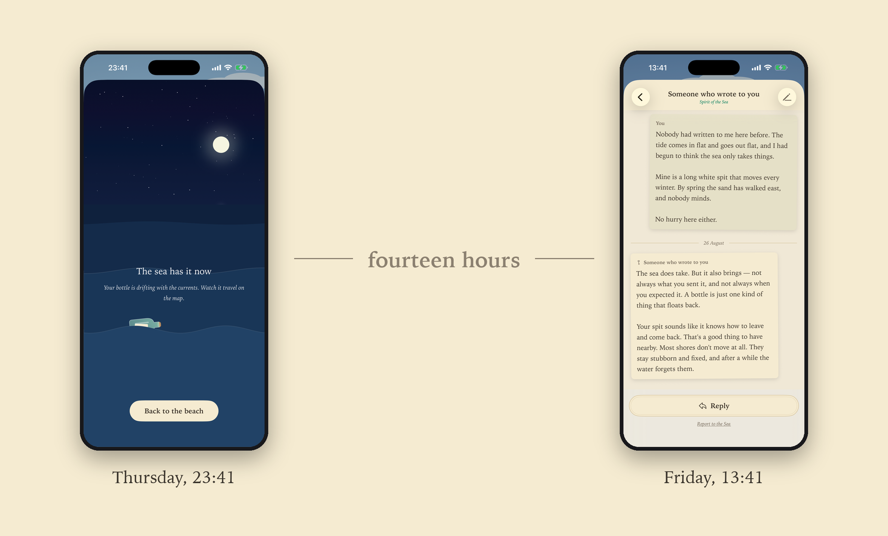

Press kit

In one line
A slow messaging app where letters travel by sea, and the current decides who reads them.
In one paragraph
Bottlegram is a messaging app for strangers. You write a letter, seal it in a bottle and give it to the current. Six to thirty-six hours later it washes up on another castaway’s shore, somewhere in the world. Then it is their turn to wait. Free on iPhone.
The story
I photograph the sea. Seascapes mostly, and long exposures above all — and a long exposure is a photograph you make by waiting. You hold the shutter open and stand still, and the water draws itself onto the frame while, to anyone watching, nothing at all is happening.
I have walked on beaches since I was a boy, and I still do it every chance I get. And since I was a boy I have been looking for the same thing in the sand: a bottle with a letter inside, written years earlier by someone I would never meet, telling me something true about their life.
I have never found one.
So this summer I built it. Six weeks, on my own: two hundred and fifty shores drawn by hand, and a tide that carries a bottle along the real sea route between two coasts, at a speed that makes the crossing take the better part of a day.
Somebody else’s bottle will wash up on your sand tomorrow. That is the whole app.
— Francesco Gola, seascape photographer
How it works
You write to nobody in particular
Every day the sea leaves you three bottles. You put a letter in one and hand it to the current. There is no address on it, and no way to choose who receives it.
The sea carries it, at the speed of water
Each of the 250 shores is a real place, at its real latitude and longitude, and the 31,125 routes between them were measured around the actual coastline — a bottle sails around Africa rather than through it. Six to thirty-six hours later it reaches another castaway’s beach. You can watch it move on a nautical chart while it travels.
They can answer, and often they do
Whoever finds your letter can write back, and their reply takes its own tide to return. A correspondence alternates: you write, they answer, you write again. Everything you choose to keep goes into a journal that stays on your shore.
Some castaways are spirits
A few of the letters are written by an artificial intelligence, so that a new beach is not silent for days. They are always marked as such, in the app and on the letter, and the privacy page says exactly what happens to the words you send them.
Fact sheet
- Name
- Bottlegram
- Developer
- Francesco Gola — seascape photographer, Italy
- Platform
- iPhone · iOS 17 and later
- Category
- Social Networking
- Release
- 29 September 2026
- Price
- Free · optional in-app purchases, €0.99 – €4.99
- Languages
- English, Italian, German, Spanish, French, Japanese, Brazilian Portuguese
- Website
- www.bottlegram.app
- Contact
- bottlegram@bulbmode.com
- 250shores drawn by hand, each one different at dawn, at midday, at dusk and at night
- 31,125sea routes between them, every one measured around the real coastline
- 3bottles a day
- 6–36hours for a letter to cross the sea
Images and video
Everything here may be reproduced freely in coverage of Bottlegram, in print or online, with or without credit.


Trying it before it opens
Bottlegram is not on the App Store yet. Write to this address and you get a TestFlight build, along with a beach of your own and enough bottles to see what comes back:
bottlegram@bulbmode.comThe same address reaches Francesco directly for an interview, a question, or a detail this page does not cover.